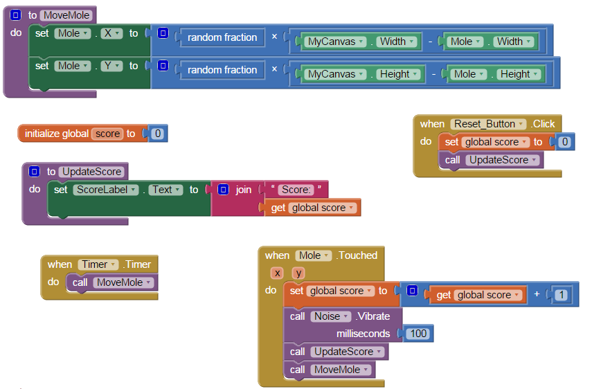

'Mole Mash' Game
Created: February 5, 2015
This mobile application is a game in which moles randomly pop up around the screen and the user must 'mash' them before they disappear again. It was created in the course Game Design 2 using MIT App Inventor, and their tutorial which can be found here.
The code, in the form of a block interface, moves the image to a random x, y coordinate on the canvas every time the timer ticks. When the mole is tapped the score is increased, the device vibrates, and the mole is moved. There is also a reset button which simply sets the score back to a value of 0.
